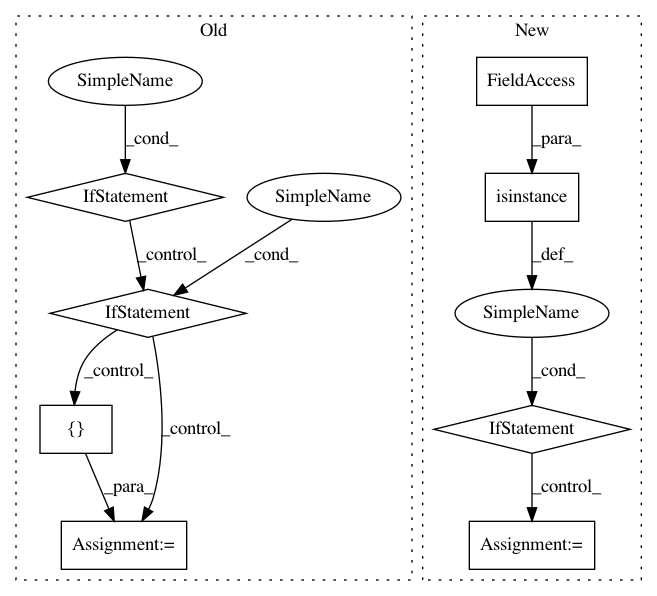

c96649bb6e1dfeb9479de6c5e8547d510c6b7a32,gluoncv/auto/tasks/utils.py,,auto_suggest,#Any#Any#Any#,80
Before Change
config["lr"] = config.get("lr", ag.Categorical(1e-2, 5e-3, 1e-3, 5e-4, 1e-4))
// estimator setting
if estimator is None:
estimator = suggested_estimator
elif isinstance(estimator, (tuple, list)):
pass
else:
assert issubclass(estimator, BaseEstimator)
estimator = [estimator]
config["estimator"] = ag.Categorical(*estimator)
def get_recursively(search_dict, field):
After Change
elif isinstance(estimator, (tuple, list)):
pass
else:
if isinstance(estimator, ag.Space):
estimator = estimator.data
elif isinstance(estimator, str):
estimator = [estimator]
for i, e in enumerate(estimator):
if e == "ssd":
estimator[i] = SSDEstimator
elif e == "yolo3":
In pattern: SUPERPATTERN
Frequency: 3
Non-data size: 8
Instances
Project Name: dmlc/gluon-cv
Commit Name: c96649bb6e1dfeb9479de6c5e8547d510c6b7a32
Time: 2021-01-19
Author: tmwang428@outlook.com
File Name: gluoncv/auto/tasks/utils.py
Class Name:
Method Name: auto_suggest
Project Name: keras-team/keras
Commit Name: 1dc67f374cde47a721e5fe5d9237bc2573bda2f0
Time: 2017-07-06
Author: souptc@gmail.com
File Name: keras/backend/cntk_backend.py
Class Name:
Method Name: in_test_phase
Project Name: keras-team/keras
Commit Name: 365f621b24631a03f995e3b30e1800d327e42fc1
Time: 2017-04-24
Author: joshuarchin@gmail.com
File Name: keras/layers/recurrent.py
Class Name: Recurrent
Method Name: call